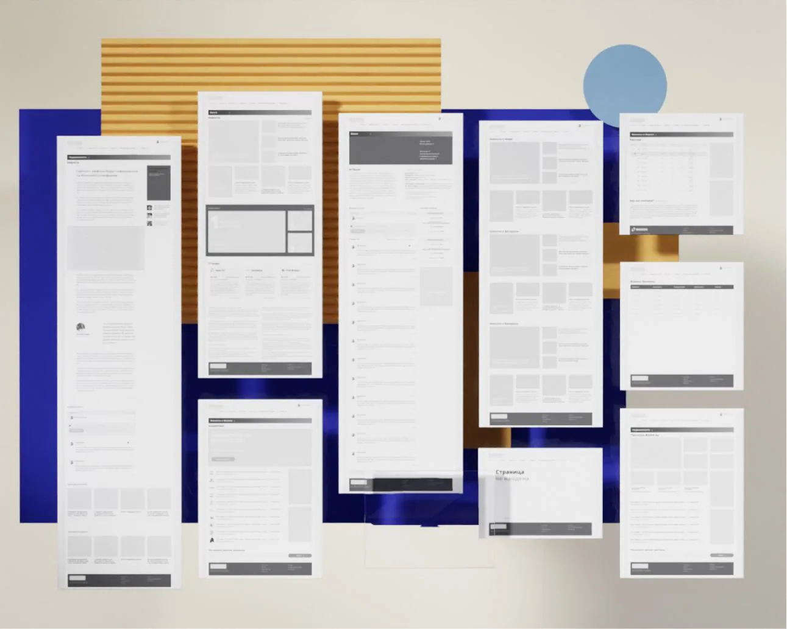
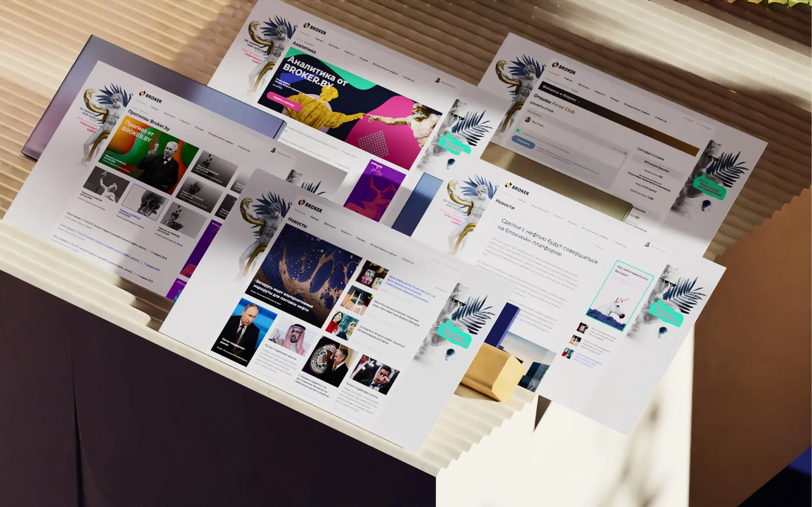

Broker
A clearer way to navigate finance.
SCROLL TO EXPLORE
Making a complex financial service easier to navigate.
A modular content and comparison experience designed to improve information access, financial literacy and engagement.
- Project
- Broker
- Role / disciplines
- Financial services / Product design
- Period
- 2022
A flexible service for complex information.
Comparative analysis of several brokers and a feedback system. Another goal of the project is to increase the financial literacy of people.


The client emphasized the need for a highly flexible website capable of accommodating a variety of page templates. To address this, we adopted a structure with prioritized content and modular block sizes. Additionally, we designed a branded background and designated spaces for banner advertising.
The outcome was a website that received positive feedback from users and distinguished itself from competitors. We tested key user flows through A/B testing and fake door tests to optimize the homepage design. As a result, the number of registrations increased by 23%, and user engagement improved by 41%.
A clearer experience, meaningful growth.
Reported results following design and user-flow testing.
